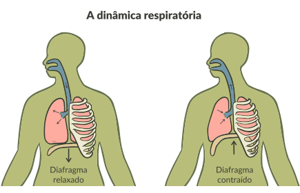

No fim da inspiração, cessa a ação sobre os músculos torácicos, eles se relaxam, e o diafragma também retorna à sua posição côncava. Nesse momento, como houve redução da caixa torácica, a pressão do ar dentro dos pulmões aumenta, fica acima da pressão atmosférica e por isso o ar é expulso dos pulmões.
